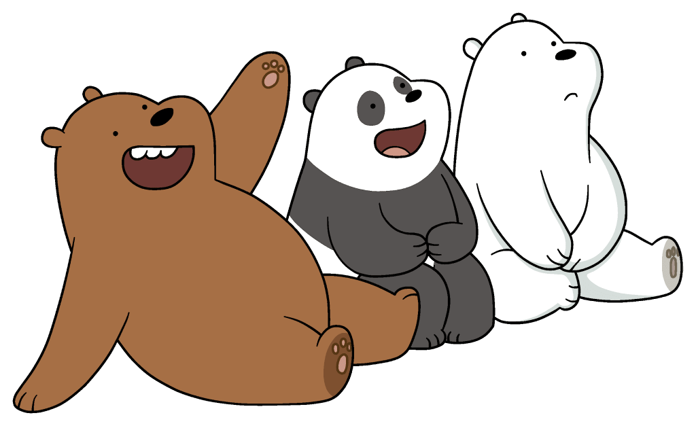

Escandalosos
Es una serie animada que actualmente se muestra en Cartoon Network y que fue creada por Daniel Chong. La serie trata de tres osos hermanos: Pardo, Panda y Polar. Durante sus intentos de integración con la sociedad humana, ya sea comprando comida, haciendo amigos humanos o convirtiéndose en celebridades de Internet, Los Osos tienen dificultades para asimilar la civilizada naturaleza de los humanos. Sin embargo, pronto se dan cuenta de que se tienen los unos a los otros para apoyarse.
Se conocieron por primera vez en las vías de un tren cuando solo eran unos oseznos (Como se muestra en un flashback en Escandalosos: La Película). Luego de lograr desatorar a Panda y escapar de un tren formando la Torre de Osos y prometen que serán hermanos para siempre.
Ellos han estado juntos para obtener un hogar. Mientras tanto, como se vio en El Camino, ellos llamaron a una Caja su hogar, la cual tenía por afuera escrito: Osos Gratis (Free Bears en Estados Unidos). En el mismo episodio, ellos perdieron su caja, así que llegaron a una fábrica de cajas, para así obtener otra, finalmente en el episodio, una persona pide un envío, y ellos se meten en la caja, y fue así como llegaron a la Bahía de San Francisco, California.
En Tienda de Mascotas, ellos trataban ser adoptados, pero no podían puesto que las personas preferían los cachorros o gatos y ellos se sintieron muy tristes, así que cuando fueron a hacer un anuncio publicitario, ellos buscaban participar, sin embargo, eligieron a perros y gatos, entonces, Pardo se le ocurrió la idea de intercambiar a los perros y gatos por ellos, y fue así como aparecieron en el aviso publicitario, sin embargo, la gente solo iba a adoptar otros animales y no a ellos, finalmente, el propietario de la tienda los echó, pero luego fue gente que quería adoptarlos pero no los encontraron y se fueron, luego los osos estaban caminando y así fue como toda la gente los vio y los adoptaron, todos los osos se fueron por separados, estaban felices, sin embargo, no podían estar tanto tiempo separados, así que decidieron dejar a sus dueños y reencontrarse, finalmente, ellos caminan sin rumbo, Panda propone ir a Japón si es que era posible y Pardo dice que tal vez.
Personajes principales de Escandalosos

Polar
Polar es uno de los 3 protagonistas principales de Escandalosos y es el más joven del trío, pero es sin duda el más fuerte y en algunos aspectos es el más maduro de ellos. Pudo rescatar a sus hermanos mayores de una muerte segura sin demasiados problemas y se apresura a entrar en acción si encuentra que surge una amenaza.

Panda
Panda es uno de los 3 protagonistas principales de Escandalosos. Panda parece tener más conocimiento sobre cosas relacionadas con la tecnología y cosas de la cultura asiática. Él es el hermano del medio y, como dijo Pardo, es el vínculo que los mantiene unidos. Parece ser el más delicado del trío, estando ansioso y lindo.

Pardo
Pardo es el principal protagonista de Escandalosos. Al ser un oso pardo, está familiarizado con el área forestal en la que viven Los Osos. Es el líder de los tres y es visto como tal. Hace todo lo posible para hacer lo correcto tanto para el beneficio de su familia como para él mismo, pero a veces puede dejarse llevar. Al crecer sin padres o tutores, al igual que sus hermanos adoptivos, creció tratando de ser un hermano mayor modelo, aunque no era muy bueno en eso.

Charlie
Charles, más conocido como Charlie, es un Pie Grande que es un personaje recurrente en Escandalosos. Es interpretado por el actor y comediante Jason Lee.

Chloe Park
Chloe Park es una personaje auxiliar en Escandalosos. Ella es una chica coreana que, en su aparición inicial, se coló en La Cueva de Los Osos para recopilar información para su informe universitario antes de finalmente hacerse amiga de ellos. Chloe se saltó la secundaria para ir a la universidad, ya que es una niña prodigio y actualmente está estudiando en la Universidad de California. Actualmente reside en San Francisco.

Nom Nom
ENom Nom es un personaje recurrente y el principal antagonista durante las dos primeras temporadas; sin embargo, comenzó una redención lenta pero firme durante la Tercera Temporada, acercándose mucho más a Pardo y ya no actuando como un verdadero antagonista. Es un koala antropomórfico multimillonario que adquirió fama en Internet a través de una serie de vídeos populares en Internet.